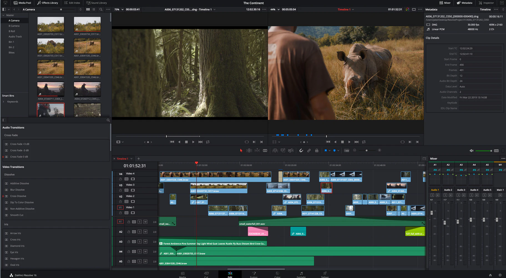

There is no need to download and set up the software. we are proving the user inbulit facility.We provide software with source code that anyone can inspect, modify and enhance.
This is a cloud computing model that stores data on the Internet through a cloud computing provider who manages and operates data storage as a service.

The future of gaming is almost certainly in the cloud. PlayStation Now, Microsoft's Project xCloud, GeForce Now, and Google Stadia are all prominent cloud gaming services. They stream games to your TV, without a games console or gaming PC, for a free.
Cloud-Based Design refers to a networked design model that leverages cloud computing. This provides web technologies to support cloud-based engineering design services in distributed and collaborative environments.
About us

Our Website is a platform for multi platform application for low end devices as well as devices having diffrent OS. Now a day applications are becoming very heavy and supporting Windows OS in majority.We can design a platform in which these all application and many heavy games are pre installed on server and user can remove platform dependency as well as can play same games and use same application in our mobile as well as pc without any emulator and other things without having any high end pc as we are just remote controlling the server side application using client side software and credentials